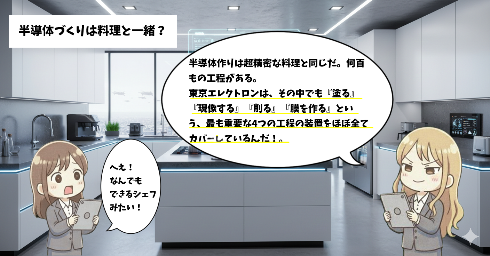
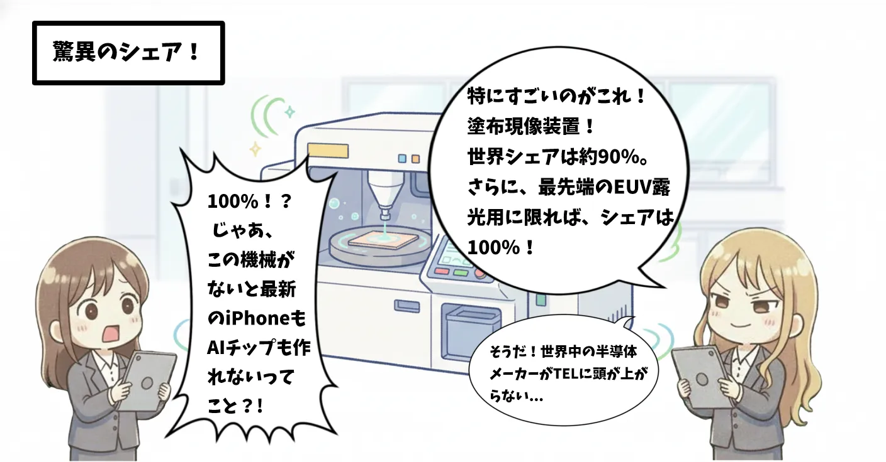
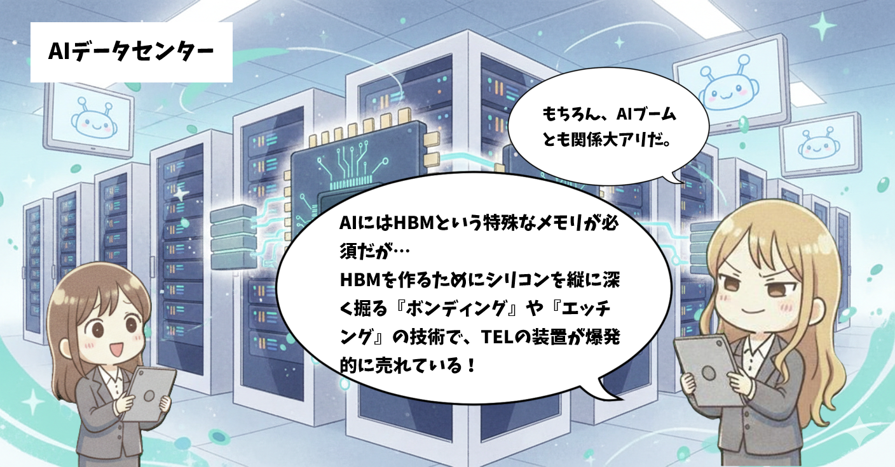
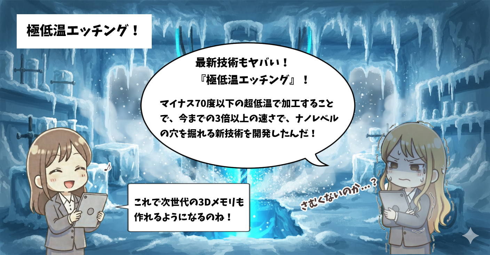
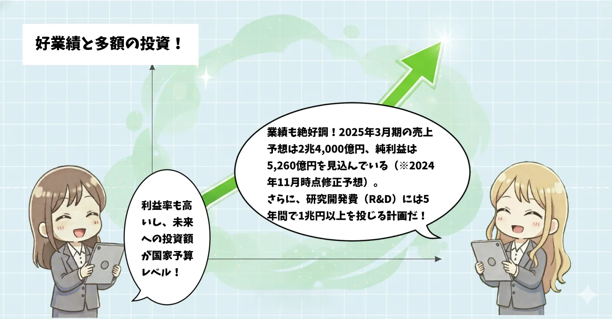
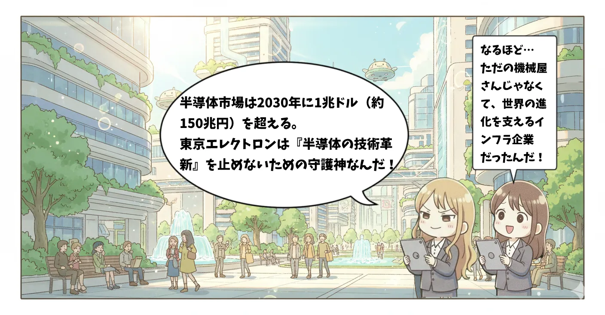

「半導体が足りない！」「AI革命だ！」というニュースを耳にすることが増えましたが、その半導体を作るために欠かせない「装置」で世界をリードしている日本企業をご存知でしょうか？ それが、今回解説する東京エレクトロン（Tokyo Electron / TEL）です。
1. マンガでサクッと解説！






半導体づくりの工程についての記事も出していきます
2. サクッともっと詳しく解説！
東京エレクトロンは、半導体をつくる工程のうち「前工程（ウェーハの上に回路を描く工程）」と呼ばれる非常に高度な技術が必要な分野で、世界シェア4位、国内1位を誇る巨大企業です。
東京エレクトロンを支える強み
- コータ・デベロッパ： ウェーハに感光剤を塗る装置。世界シェア約9割と、もはや独占状態！
- エッチング装置： 回路を削り出す装置。世界トップクラスのシェア。
- 成膜装置： 薄い膜を形成する装置。高い技術力で高シェアを維持。
AI需要が追い風になる理由
AIに使用されるGPUなどは、極めて微細で複雑な構造をしています。これを作るには、より高性能で精密な製造装置が必要になります。東京エレクトロンは最新の「EUV露光」技術に対応する周辺装置でも強みを持っており、半導体が進化すればするほど、同社の装置が必要とされる仕組みになっています。
他社とのつながり（半導体サプライチェーンの中でのTELの位置づけ）
TSMC：最重要顧客であり技術パートナー
TSMCは世界最大の半導体受託生産企業で、先端プロセスの多くでTELの装置が使われています。エッチング装置・成膜装置の採用が多い2nm以降の先端プロセスでもTELの技術が重要であり、TSMCの設備投資はTELの売上に直結しています。「TSMCの増産＝TELの追い風」という強い連動性があります。
Samsung：メモリ向け装置の大口顧客
SamsungはDRAM・NANDの世界最大手で、メモリ製造にはTELの装置が欠かせません。メモリ向け成膜・エッチングで高いシェアを誇っていて、HBM増産に伴いTEL装置の需要が増加していっています。Samsungの投資サイクルがTELの業績に影響を与えていて、HBMブームの恩恵を受ける企業のひとつです。
SK hynix：HBM特需の中心顧客
SK hynixはHBM市場のトップ企業で、HBM製造工程でもTELの装置が多く使われています。HBM3E・HBM4向けの設備投資が急増していて、歩留まり改善にTELの技術が貢献しています。また、AI需要の拡大とともに装置需要が増加していっています。AIサーバーの増加＝HBM増産＝TELの装置需要増という構図です。
Intel：先端ロジックの復活で需要増
Intelは先端プロセスの巻き返しを狙っており、その設備投資の多くでTELの装置が採用されています。Intel 18Aなど先端ノードで採用され、米国国内投資が増えるとTELにも恩恵がり、IDM 2.0戦略の進展が追い風となっています。Intelの復活はTELにとってもプラス材料です。
ASML：競合ではなく“補完関係”
ASMLは露光装置の世界唯一のメーカーですが、TELとは競合ではなく、むしろ補完関係にあります。ASMLのEUV露光後の工程にTEL装置が必要で、露光→成膜→エッチング→洗浄の流れで連携しています。先端プロセスほどTELの重要性が増しています。ASMLが強いほど、TELの装置も必要になる構造です。
今後の注目ポイント
🚀 期待できる点
- 半導体市場の拡大： AI、自動運転、5Gなどの普及による長期的な需要増。
- 次世代技術の開発： 3D積層技術や新型エッチング技術など、技術革新をリード。
- 高い利益率： サービス・保守ビジネスの拡大により、安定して高い利益を創出。
⚠️ 注意すべき点
- シリコンサイクル： 半導体市場特有の需給バランスによる業績の波。
- 米中対立の影響： 輸出規制などの地政学リスクが売上に影響する可能性。
- 為替： 海外売上比率が非常に高く、円高に弱い側面がある。
📊 ファンダメンタルデータ
📈 株価チャート
チャートはこちらをクリック3. まとめ
- 日本が世界に誇る半導体製造装置のトッププレーヤー。
- 特定の工程（コータ・デベロッパなど）では世界シェア9割と圧倒的。
- AI需要による半導体の微細化・多層化が進むほど、同社の技術が不可欠。
- 業績は循環的だが、長期的な半導体市場の成長とともに拡大が期待される。